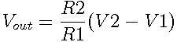

A differential amplifier amplifies the difference between its two input signals.
The voltage at the noninverting terminal is determined by the input signal and the resistor divider formed by the lower two resistors. This is matched at the inverting terminal by opamp action. The output of the amplifier is .
A differential amplifier requires very close matching of resistor values R1 and R2 to achieve high common-mode rejection ratios.